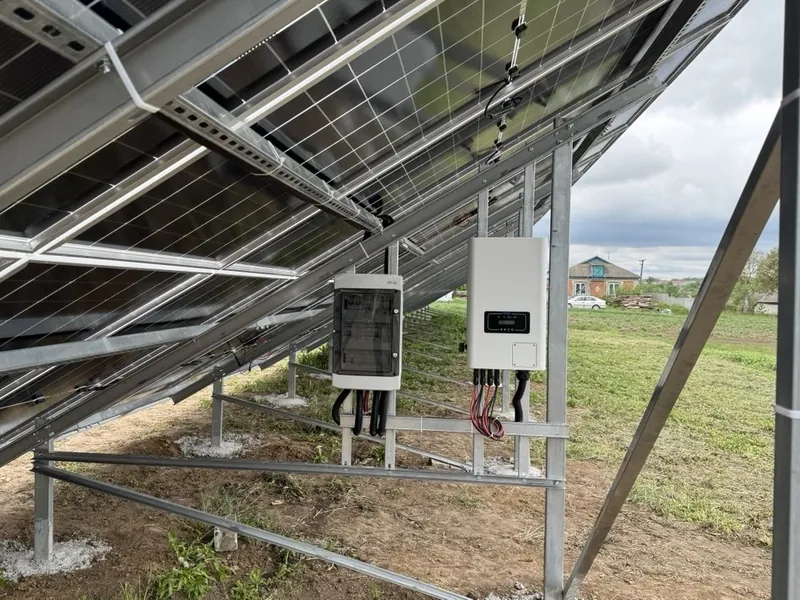
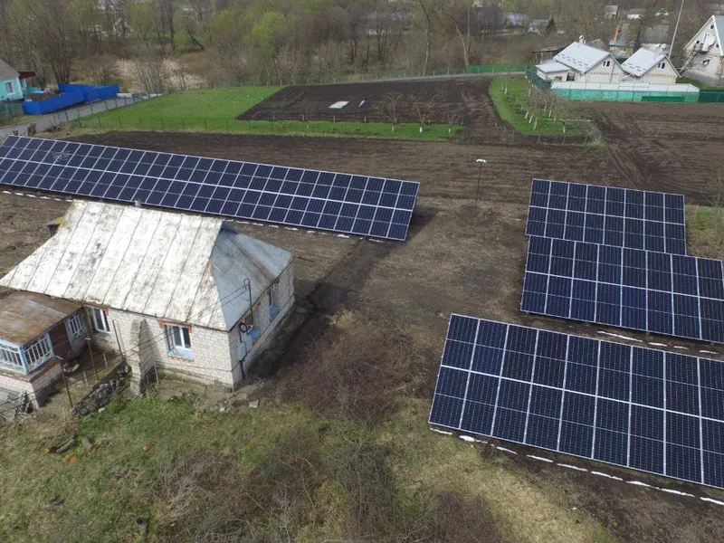

Обслуговування сонячних станцій
Огляд і діагностика, чищення панелей, налаштування інвертора й ремонт, щоб станція давала стільки енергії, скільки має.
- Станції
- дахові й наземні, мережеві й гібридні
- Територія
- Вінниця й область
- Станції інших монтажників
- уточнити
- Вартість виїзду й огляду
- уточнити
- Як швидко приїдемо
- уточнити
- Гарантія на обладнання
- уточнити
Що входить
Огляд і діагностика
- панелі, кабелі, кріплення й з'єднання
- інвертор і акумулятори
- пошук причин нижчої генерації
Профілактика
- чищення панелей від пилу й бруду
- перевірка конструкцій і кріплень
Налаштування
- параметри інвертора
- якість з'єднань
- моніторинг роботи станції
Ремонт
- заміна несправних деталей
- оперативний ремонт
- консультації з експлуатації
Як проходить обслуговування
- 01Заявкащо сталося або коли був останній огляд
- 02Виїзддіагностика на місці
- 03Роботичищення, налаштування або ремонт
- 04Поясненнящо зроблено й на що зважати далі
Наші роботи




Питання про обслуговування
Що входить у плановий огляд?
Перевірка панелей, кабелів і конструкцій, чищення панелей, перевірка інвертора й акумуляторів, аналіз того, скільки енергії дає станція.
Як часто обслуговувати станцію?
уточнити
Чи обслуговуєте станції, які ставили інші компанії?
уточнити
Заявка на обслуговування
Інженер передзвонить у робочий час, 09:00–18:00.